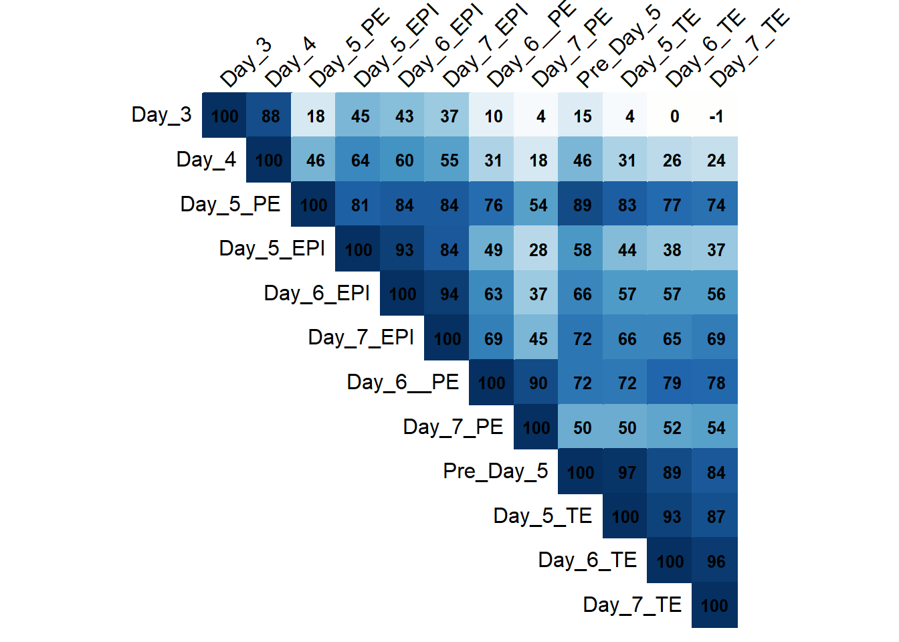
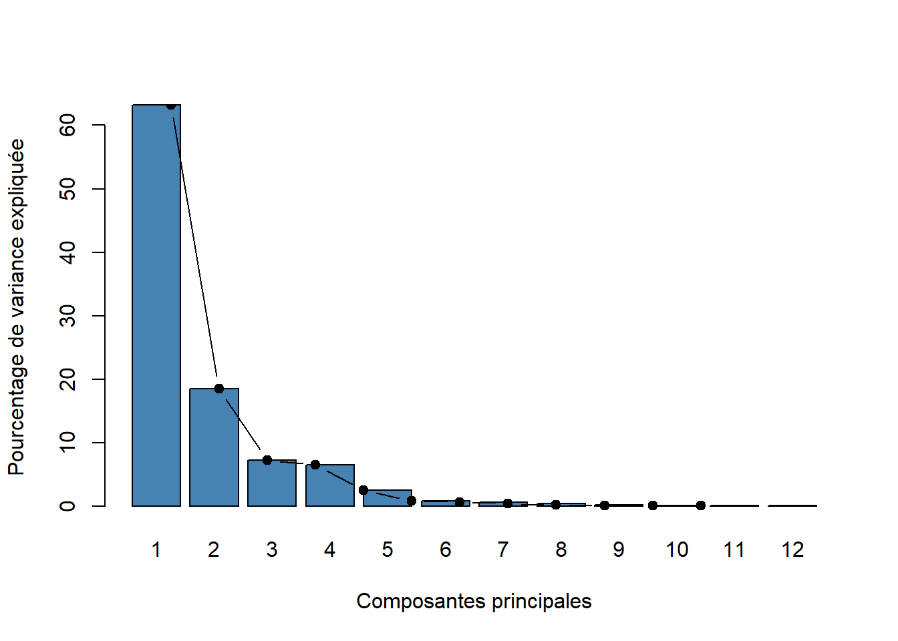
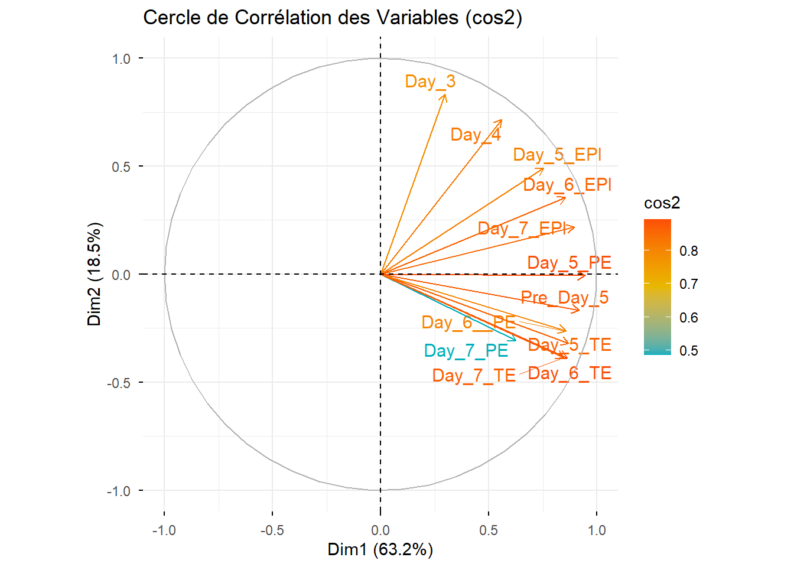
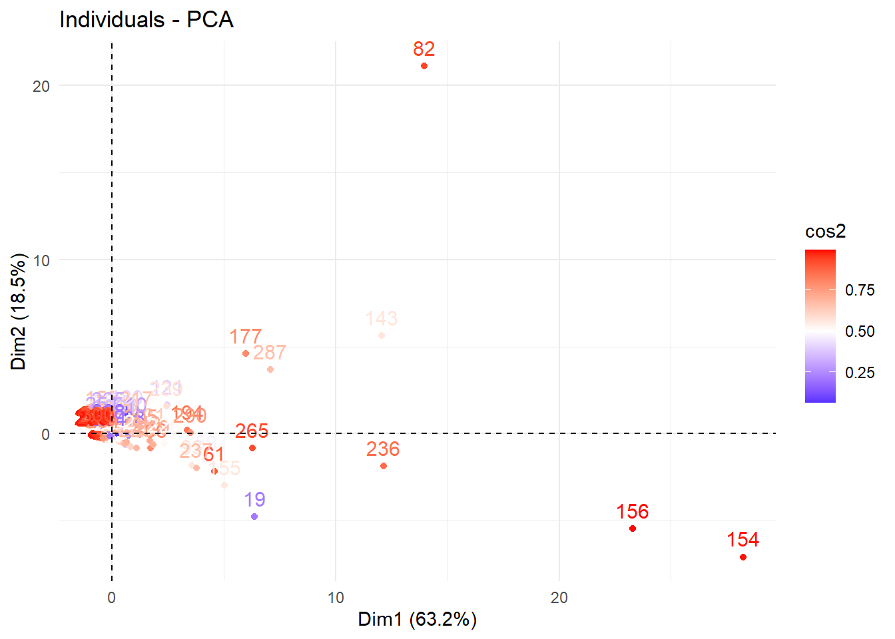
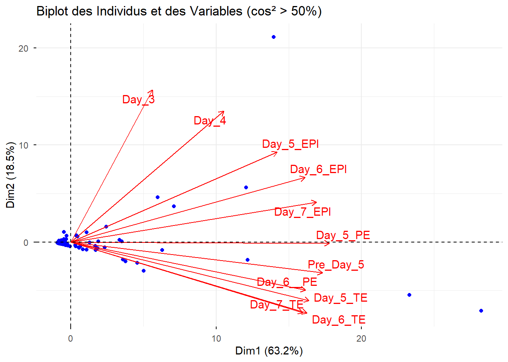

library(dplyr)
library(car)
library(readxl)
library(factoextra)
library(FactoMineR)
library(remotes)
library(factoextra)
library(corrplot)Décrypter le transcriptome : L’art de la réduction de dimension
Analyse en composantes principales des profils d’expression génique
Exercice 1 - Décrypter le transcriptome
Les packages qui seront utiles pour cet exercice.
Le jeu de données utilisé dans cet examen est inspiré d’une étude publiée dans la revue Cell, Petropoulos et al. (2016), où des chercheurs ont mesuré l’activité de nombreux gènes dans des cellules provenant d’embryons humains très précoces. Leur objectif était d’observer comment les cellules évoluent au cours du développement et comment elles se différencient en plusieurs types cellulaires.
Pour notre exercice, nous utilisons une version simplifiée de ce type de données. Le fichier contient :
300 gènes (chaque ligne correspond à un gène différent)
12 échantillons (chaque colonne correspond à une condition biologique), représentant différents jours de développement et différents types de cellules :
- Exemples : Day_5_EPI, Day_5_TE, Day_6_PE, etc.
Les variables du fichier sont donc :
Gene : nom du gène
12 variables quantitatives (une par condition), correspondant à l’expression du gène dans chaque échantillon (mesure numérique)
L’objectif de l’Analyse en composantes principales est d’identifier les grands axes qui résument les principales différences d’expression entre ces 12 conditions, et de visualiser si certaines conditions se regroupent selon des profils similaires.
Le fichier de données est mmc3.xlsx.
data = read_excel("data_raw/mmc3.xlsx")
head(data)# A tibble: 6 × 13
Gene Day_3 Day_4 Pre_Day_5 Day_5_EPI Day_5_PE Day_5_TE Day_6_EPI Day_6__PE
<chr> <dbl> <dbl> <dbl> <dbl> <dbl> <dbl> <dbl> <dbl>
1 SEPT6 1.5 0 0.2 2.2 0.6 0.3 9.8 0.7
2 AARS2 2.3 13.8 17.3 44.1 19.5 8.5 21.8 7.5
3 ABCG2 0.2 0.3 7.6 3.3 10.4 35.1 23 54
4 ABHD12B 5.8 11 16.7 33.3 17 12.3 57.4 18.3
5 ABHD6 0.8 4.2 9.7 7.5 29.2 8.1 11.8 14.8
6 ACE 0.3 17.5 10.3 15.4 6.7 3.9 11.1 1.3
# ℹ 4 more variables: Day_6_TE <dbl>, Day_7_EPI <dbl>, Day_7_PE <dbl>,
# Day_7_TE <dbl>var.quanti = sapply(data, is.numeric)
data.quanti = data[, var.quanti]
head(data.quanti)# A tibble: 6 × 12
Day_3 Day_4 Pre_Day_5 Day_5_EPI Day_5_PE Day_5_TE Day_6_EPI Day_6__PE Day_6_TE
<dbl> <dbl> <dbl> <dbl> <dbl> <dbl> <dbl> <dbl> <dbl>
1 1.5 0 0.2 2.2 0.6 0.3 9.8 0.7 0.4
2 2.3 13.8 17.3 44.1 19.5 8.5 21.8 7.5 4.8
3 0.2 0.3 7.6 3.3 10.4 35.1 23 54 71.3
4 5.8 11 16.7 33.3 17 12.3 57.4 18.3 9.8
5 0.8 4.2 9.7 7.5 29.2 8.1 11.8 14.8 8.8
6 0.3 17.5 10.3 15.4 6.7 3.9 11.1 1.3 0.8
# ℹ 3 more variables: Day_7_EPI <dbl>, Day_7_PE <dbl>, Day_7_TE <dbl>Matrice.Correlation <- cor(data.quanti, use = "complete.obs")
corrplot(Matrice.Correlation,
method = "color",
type = "upper",
order = "hclust",
tl.col = "black",
tl.srt = 45,
addCoef.col = "black",
cl.pos = "n",
cl.cex = 1.2,
addCoefasPercent = TRUE,
number.cex = 0.8)
data.quanti = data[, var.quanti]data.CR <- scale(data.quanti,center = TRUE,scale=TRUE)
pca.data <- PCA(data.CR, graph = FALSE)
vp = pca.data$eig
vp eigenvalue percentage of variance cumulative percentage of variance
comp 1 7.585892122 63.21576768 63.21577
comp 2 2.217238058 18.47698382 81.69275
comp 3 0.873147907 7.27623255 88.96898
comp 4 0.776224795 6.46853996 95.43752
comp 5 0.293172253 2.44310211 97.88063
comp 6 0.097438066 0.81198388 98.69261
comp 7 0.072100242 0.60083535 99.29345
comp 8 0.046325556 0.38604630 99.67949
comp 9 0.016444017 0.13703347 99.81653
comp 10 0.013633402 0.11361169 99.93014
comp 11 0.005016309 0.04180257 99.97194
comp 12 0.003367273 0.02806061 100.00000barplot(vp[, 2],
names.arg=1:nrow(vp),
main = "",
xlab = "Composantes principales",
ylab = "Pourcentage de variance expliquée",
col ="steelblue")
lines(x = 1:nrow(vp),
vp[, 2],
type="b",
pch=19,
col = "black")
fviz_pca_var(pca.data,
col.var = "cos2",
gradient.cols = c("#00AFBB", "#E7B800", "#FC4E07"),
repel = TRUE,
title = "Cercle de Corrélation des Variables (cos2)")
head(pca.data$ind$coord) Dim.1 Dim.2 Dim.3 Dim.4 Dim.5
1 -0.8860388 -0.05653948 -0.05987579 0.0326202352 0.03833300
2 -0.6057873 0.10852636 -0.12243416 -0.0690008780 -0.10503767
3 -0.3699260 -0.31957924 0.03212768 0.1043982993 0.31567397
4 -0.5063049 0.11052344 -0.11409912 -0.1403434496 0.02666491
5 -0.6891486 -0.07722587 -0.02877404 0.0005839167 -0.07581851
6 -0.7792027 0.06145232 -0.06881027 0.0769645114 -0.05851516fviz_pca_ind(pca.data, col.ind="cos2") +
scale_color_gradient2(low="blue", mid="white", high="red", midpoint=0.50) +
theme_minimal()
# Filtrer les individus avec cos² > 50%
ind_cos2 <- apply(pca.data$ind$cos2, 1, max) > 0.5
# Filtrer les variables avec cos² > 50%
var_cos2 <- apply(pca.data$var$cos2, 1, max) > 0.5
# Créer un graphique combiné des individus et des variables
fviz_pca_biplot(pca.data,
select.ind = list(cos2 = 0.5), # Sélectionner les individus avec cos² > 50%
select.var = list(cos2 = 0.5), # Sélectionner les variables avec cos² > 50%
repel = TRUE, # Éviter le chevauchement des étiquettes
title = "Biplot des Individus et des Variables (cos² > 50%)",
col.ind = "blue", # Couleur des individus
col.var = "red", # Couleur des variables
geom.ind = "point"
)
Les références
Petropoulos, S., Edsgärd, D., Reinius, B., Deng, Q., Panula, S. P., Codeluppi, S., Reyes, A. P., Linnarsson, S., Sandberg, R., et Lanner, F. (2016). Single-cell RNA-seq reveals lineage and X chromosome dynamics in human preimplantation embryos. Cell 165: 1012‑1026.